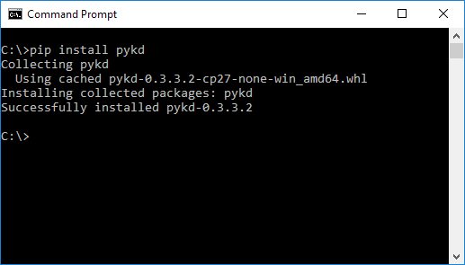

The content of this post is the second part of PyKD Tutorials, so make sure to read this topic first, then continue reading this topic.
Breakpoints
Breakpoints are such useful things and can give you the power of analyzing programs in a better and easier way by using PyKD. In the API Reference they introduce setBp function in the following way :
1
2
3
4
5
6
7
8
9
10
11
setBp( (long)offset [, (object)callback]) -> breakpoint :
Set software breakpoint on executiont
C++ signature :
class pykd::Breakpoint * __ptr64 setBp(unsigned __int64 [,class boost::python::api::object {lvalue}])
setBp( (long)offset, (long)size, (int)accsessType [, (object)callback]) -> breakpoint :
Set hardware breakpoint
C++ signature :
class pykd::Breakpoint * __ptr64 setBp(unsigned __int64,unsigned __int64,unsigned long [,class boost::python::api::object {lvalue}])
As you can see, setBp can give a pointer as its first argument and a python function as the second argument. Every time the pointer executes, your python function will be invoked. The second usage of setBp is for setting hardware breakpoints. Removing the all the breakpoints using pykd.removeAllBp(). Remove a breakpoint by its index removeBp(int).
Searching through the memory
Even though searching for a string or a special byte is really straight in Windbg but you can also use PyKD in order to search through the memory.
1
2
3
4
5
import pykd
result = pykd.searchMemory(0x0,0x7fffffff,"A")
print(hex(result))
And the result is :
1
2
3
4
5
6
7
8
9
10
11
0:010> !py c:\users\Sina\desktop\pykd-script.py
0x5d6700ba
0:010> db 0x5d6700ba
00000000`5d6700ba 41 e4 d4 aa 8f e4 0b 55-5f e4 d7 aa 8f e4 0b 55 A......U_......U
00000000`5d6700ca 44 e4 d9 aa 8f e4 d6 aa-8e e4 f9 ab 8f e4 ab d3 D...............
00000000`5d6700da 6f e4 f0 aa 8f e4 ab d3-6e e4 d0 ab 8f e4 ab d3 o.......n.......
00000000`5d6700ea 53 e4 d7 aa 8f e4 db f8-54 e4 d7 aa 8f e4 d6 aa S.......T.......
00000000`5d6700fa 18 e4 d7 aa 8f e4 ab d3-51 e4 d7 aa 8f e4 52 69 ........Q.....Ri
00000000`5d67010a 63 68 d6 aa 8f e4 00 00-00 00 00 00 00 00 00 00 ch..............
00000000`5d67011a 00 00 00 00 00 00 00 00-00 00 00 00 00 00 50 45 ..............PE
00000000`5d67012a 00 00 64 86 06 00 01 76-e7 57 00 00 00 00 00 00 ..d....v.W......
Edit a Byte
The equivalent of eb is setByte as follows:
1
2
3
import pykd
pykd.setByte(0x7fffd3d5d965,0x41)
The above script is like :
1
eb 0x7fffd3d5d965 0x41
Other variants are setDWord,setDouble,setFloat.
Changing XIP
You can use setIP in order to change the current RIP or EIP which is very useful in defeating with packers and protectors.
1
2
3
import pykd
pykd.setIP(0x7fffd3d5d94f)
Set Symbol Path
For debugging purpose you can also set symbol path like this:
1
pykd.setSymbolPath("srv*c:\symbols*https://msdl.microsoft.com/download/symbols")
1
2
3
4
5
0:003> !py c:\users\Sina\desktop\pykd-script.py
************* Symbol Path validation summary **************
Response Time (ms) Location
Deferred srv*c:\symbols*https://msdl.microsoft.com/download/symbols
Step and Step-out and Trace
Instead of using p and t you can use its equivalent pykd.step() and pykd.stepout() and pykd.trace().
Disassemble Memory
The following example describes how to disassemble the memory at a specific address.
1
2
3
4
5
import pykd
result = pykd.disasm(0x7fffd3d5d956)
print(result)
The result depends on the location. e.g :
1
2
0:003> !py c:\users\Sina\desktop\pykd-script.py
00007fff`d3d5d956 66660f1f840000000000 nop word ptr [rax+rax]
Further Reading
In the above post, I tried to describe the main features of PyKD and how can it be used to ease the reverse engineering process, if you want to read more about PyKD API References take a look at this link, there is also a good article here worth to read.
Comments powered by Disqus.